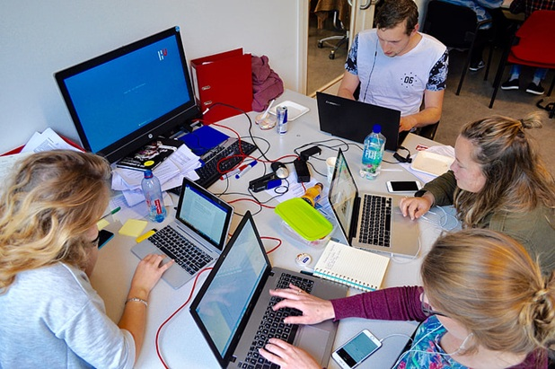
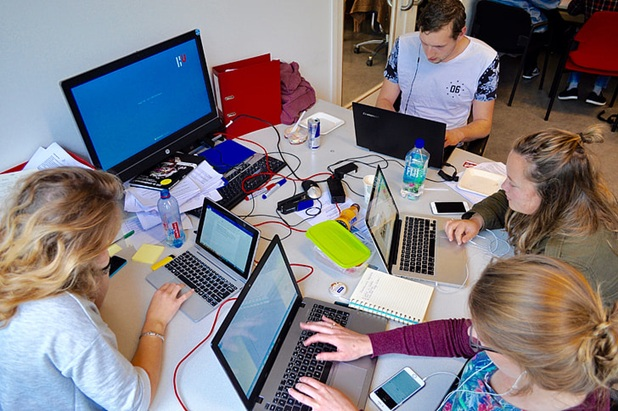

This toolkit is a compilation of our favorite resources and strategies for engaging all students, designed for use by High School Computer Science Educators, especially those teaching Java, C#, Python, HTML, CSS, and JavaScript.
 
